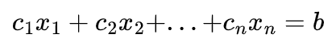
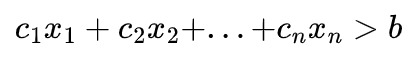
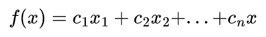

<!DOCTYPE html>
<html lang="en">
  <head>
    <meta charset="utf-8" />
    <meta name="viewport" content="width=device-width, initial-scale=1.0, maximum-scale=1.0, user-scalable=no" />

    <title></title>
    <link rel="stylesheet" href="dist/reveal.css" />
    <link rel="stylesheet" href="dist/theme/black.css" id="theme" />
    <link rel="stylesheet" href="plugin/highlight/zenburn.css" />
	<link rel="stylesheet" href="css/layout.css" />
	<link rel="stylesheet" href="plugin/customcontrols/style.css">


    <script defer src="dist/fontawesome/all.min.js"></script>

	<script type="text/javascript">
		var forgetPop = true;
		function onPopState(event) {
			if(forgetPop){
				forgetPop = false;
			} else {
				parent.postMessage(event.target.location.href, "app://obsidian.md");
			}
        }
		window.onpopstate = onPopState;
		window.onmessage = event => {
			if(event.data == "reload"){
				window.document.location.reload();
			}
			forgetPop = true;
		}

		function fitElements(){
			const itemsToFit = document.getElementsByClassName('fitText');
			for (const item in itemsToFit) {
				if (Object.hasOwnProperty.call(itemsToFit, item)) {
					var element = itemsToFit[item];
					fitElement(element,1, 1000);
					element.classList.remove('fitText');
				}
			}
		}

		function fitElement(element, start, end){

			const size = (end + start) / 2;
			element.style.fontSize = `${size}px`;

			if(Math.abs(start - end) < 1){
				return;
			}

			if(element.scrollHeight > element.offsetHeight){
				fitElement(element, start, size);
			} else {
				fitElement(element, size, end);
			}		
		}


		document.onreadystatechange = () => {
			fitElements();
			if (document.readyState === 'complete') {
				if (window.location.href.indexOf("?export") != -1){
					parent.postMessage(event.target.location.href, "app://obsidian.md");
				}
				if (window.location.href.indexOf("print-pdf") != -1){
					let stateCheck = setInterval(() => {
						clearInterval(stateCheck);
						window.print();
					}, 250);
				}
			}
	};


        </script>
  </head>
  <body>
    <div class="reveal">
      <div class="slides"><section  data-markdown><script type="text/template"># Funções, equações e inequações
#ficha
</script></section><section ><section data-markdown><script type="text/template">
A pesquisa operacional busca estabelecer um processo de decisão para a escolha de uma solução dentre as alternativas viáveis.
</script></section><section data-markdown><script type="text/template">
Para a obtenção de uma solução ótima, métodos matemáticos são empregados e denominados de otimização. O principal desafio no processo de otimização é obter um modelo matemático capaz de ser tratado por algum dos métodos de otimização. A modelagem pode ser então definido como a arte de representar situações reais através de expressões matemáticas. Desta forma, expressões matemáticas podem ser entendidas como uma aproximação da realidade.
</script></section><section data-markdown><script type="text/template">
A modelagem matemática é a área do conhecimento que transforma o mundo real em linguagem matemática. Ela pode ser empregada em diversos campos de estudo, tais como física, química, biologia, economia e engenharias. A modelagem matemática pode ser entendida portanto, como a tentativa de se descrever matematicamente um fenômeno.
</script></section></section><section ><section data-markdown><script type="text/template">
## Equação

Equação linear é uma expressão matemática formada por variáveis e seus respectivos coeficientes numa relação de igualdade com um termo independente:

<p style="line-height: 0" class="reset-paragraph"></img></p>

  </script></section><section data-markdown><script type="text/template">
<p style="line-height: 0" class="reset-paragraph"></img></p>


em que c1, c2, c3, ... , cn são números reais, que recebem o nome de coeficientes das variáveis x1, x2, x3, ... , xn e b é um número real chamado termo independente.
</script></section><section data-markdown><script type="text/template">
Dada uma equação linear, os valores das incógnitas serão tais que satisfazem a sua igualdade, isto é, tornam a equação verdadeira.
</script></section></section><section ><section data-markdown><script type="text/template">
## Inequação

Inequação é uma expressão matemática formada por variáveis e seus respectivos coeficientes numa relação de desigualdade com um termo independente. Ao contrário de uma equação, que representa sempre uma igualdade, as inequações representam relações de não equivalência literal. 
</script></section><section data-markdown><script type="text/template">
A desigualdade é satisfeita por valores que atendem a critérios de maior (>), maior ou igual (>=), menor (<) , ou menor ou igual (<=). Por exemplo:

<p style="line-height: 0" class="reset-paragraph"></img></p>

</script></section><section data-markdown><script type="text/template">
<p style="line-height: 0" class="reset-paragraph"></img></p>


em que c1, c2, c3, ... , cn são números reais, que recebem o nome de coeficientes das variáveis x1, x2, x3, ... , xn e b é um número real chamado termo independente.
</script></section></section><section ><section data-markdown><script type="text/template">
## Função

Uma função de uma quantidade variável é qualquer expressão analítica formada por essa quantidade variável e por números ou quantidades constantes. Função é uma lei ou regra que associa cada elemento de um conjunto chamado de domínio, à um único elemento de um conjunto denominado de contradomínio. 

<p style="line-height: 0" class="reset-paragraph"></img></p>

</script></section><section data-markdown><script type="text/template">
Com essa definição pode-se dizer que função representa a regra de dependência entre dois conjuntos. Conhecendo-se a regra e um valor, é possível determinar qual o outro valor. Por exemplo, conhecendo a regra (função) e um elemento do contradomínio, é possível determinar o valor equivalente no domínio, e vice-versa. 
</script></section><section data-markdown><script type="text/template">
Assim, matematicamente dizemos que uma função é uma relação tipo y = f(x), sendo que x é um elemento do domínio da função e y é um elemento do contradomínio, também conhecido como conjunto imagem da função.
</script></section><section data-markdown><script type="text/template">
Toda função é definida por uma lei de formação, responsável por relacionar os dois conjuntos A e B. Através da álgebra, as funções expressam de forma clara e inequívoca essa relação. Por exemplo, a função f(x) = x + 2 define a regra para determinar o valor de y a partir da adição de duas unidades ao valor de x.</script></section></section></div>
    </div>

    <script src="dist/reveal.js"></script>

    <script src="plugin/markdown/markdown.js"></script>
    <script src="plugin/highlight/highlight.js"></script>
    <script src="plugin/zoom/zoom.js"></script>
    <script src="plugin/notes/notes.js"></script>
    <script src="plugin/math/math.js"></script>
	<script src="plugin/mermaid/mermaid.js"></script>
	<script src="plugin/customcontrols/plugin.js"></script>

    <script>
      function extend() {
        var target = {};
        for (var i = 0; i < arguments.length; i++) {
          var source = arguments[i];
          for (var key in source) {
            if (source.hasOwnProperty(key)) {
              target[key] = source[key];
            }
          }
        }
        return target;
      }

      // default options to init reveal.js
      var defaultOptions = {
        controls: true,
        progress: true,
        history: true,
        center: true,
        transition: 'default', // none/fade/slide/convex/concave/zoom
        plugins: [
          RevealMarkdown,
          RevealHighlight,
          RevealZoom,
          RevealNotes,
          RevealMath.MathJax3,
		  RevealMermaid,
		  RevealCustomControls,
        ],

		mathjax3: {
			mathjax: 'plugin/math/mathjax/tex-mml-chtml.js',
		},

		customcontrols: {
			controls: [
			]
		},
      };

      // options from URL query string
      var queryOptions = Reveal().getQueryHash() || {};

      var options = extend(defaultOptions, {"width":960,"height":700,"margin":0.04,"controls":true,"progress":true,"slideNumber":true,"transition":"slide","transitionSpeed":"default"}, queryOptions);
    </script>

    <script>
      Reveal.initialize(options);
    </script>
  </body>
</html>
